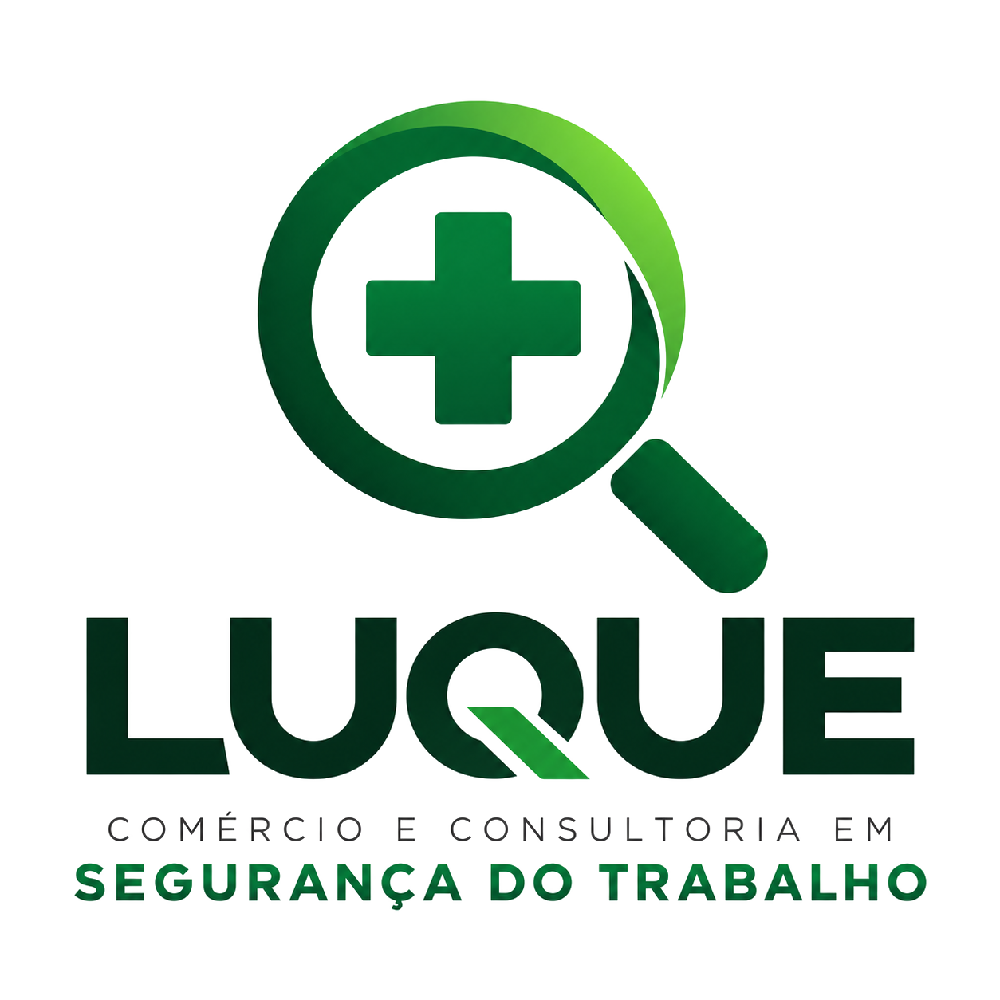

Gestão de SST
Apoio no reconhecimento de perigos, avaliação de riscos e implementação de ações preventivas.
Saiba mais ↗
LUQUESEGURANÇA DO TRABALHOEXPERIÊNCIA QUE GERA CONFIANÇA • DESDE 2003
Há mais de duas décadas ajudando organizações a construir ambientes de trabalho mais seguros, com consultoria especializada, prevenção e compromisso.

QUEM SOMOS
Desde 2003, a LUQUE Comércio e Consultoria em Segurança do Trabalho atua apoiando empresas na prevenção de acidentes, no gerenciamento de riscos ocupacionais e na promoção de ambientes de trabalho mais seguros.
Com mais de 800 empresas atendidas, valorizamos soluções adequadas à realidade de cada operação, unindo orientação técnica e compromisso com as pessoas.
Fale com nossa equipe →NOSSAS SOLUÇÕES
Atuação preventiva para diferentes atividades e necessidades empresariais.
Apoio no reconhecimento de perigos, avaliação de riscos e implementação de ações preventivas.
Saiba mais ↗Suporte para PGR, LTCAT e outros documentos, respeitando os requisitos legais e as habilitações profissionais aplicáveis.
Saiba mais ↗Acompanhamento das condições operacionais, identificação de melhorias e elaboração de relatórios técnicos.
Saiba mais ↗Desde 2003, a LUQUE contribui para ambientes de trabalho mais seguros e saudáveis, com mais de 800 empresas atendidas.
Conheça nossas soluções ↗PORTFÓLIO CORPORATIVO 2026
Atendimento técnico voltado à prevenção, à conformidade e à melhoria contínua das condições de trabalho.
LTCAT, PPP, laudos de insalubridade (NR-15), periculosidade (NR-16), LTIP, laudo acústico e regularização de segurança contra incêndio (AVCB e CLCB).
PGR, PCA, PPR e PPRPS, com identificação, avaliação e controle de riscos e acompanhamento de medidas preventivas.
Dosimetria de ruído, avaliação de calor, iluminância, mapa de riscos e Plano de Atendimento a Emergências (PAE).
SIPAT, primeiros socorros, uso correto de EPI e EPC, prevenção de acidentes e orientações sobre produtos químicos.
SAÚDE E SEGURANÇA NO TRABALHO
Exigências excessivas, assédio, falta de apoio e outros fatores relacionados à organização do trabalho podem comprometer a saúde e a segurança dos trabalhadores. Identificar e avaliar esses fatores ajuda a orientar medidas preventivas e o gerenciamento dos riscos ocupacionais.
SEGURANÇA NA PRÁTICA
Nosso foco é apoiar a prevenção onde ela mais importa: no dia a dia de quem trabalha.
Conheça como podemos ajudar ↗CAPACITAÇÃO
Treinamentos, orientações e ações educativas em segurança do trabalho, conforme as necessidades de cada empresa e os requisitos aplicáveis.
Espaço próprio para capacitações e atividades de formação em Segurança e Saúde no Trabalho. Consulte a programação e a disponibilidade.

NOSSA EQUIPE
Profissionais com diferentes formações para apoiar as necessidades de segurança e saúde ocupacional.
ONDE ESTAMOS
Rua João Passos, 1485
Centro · Botucatu/SP
Estamos à disposição para conversar sobre as necessidades de Segurança e Saúde no Trabalho da sua empresa.
Telefone fixo: (14) 3815-4617
WhatsApp: (14) 99718-3437
FALE COM A LUQUE
Conte o que sua empresa precisa. Prepare sua mensagem para solicitar uma proposta personalizada.